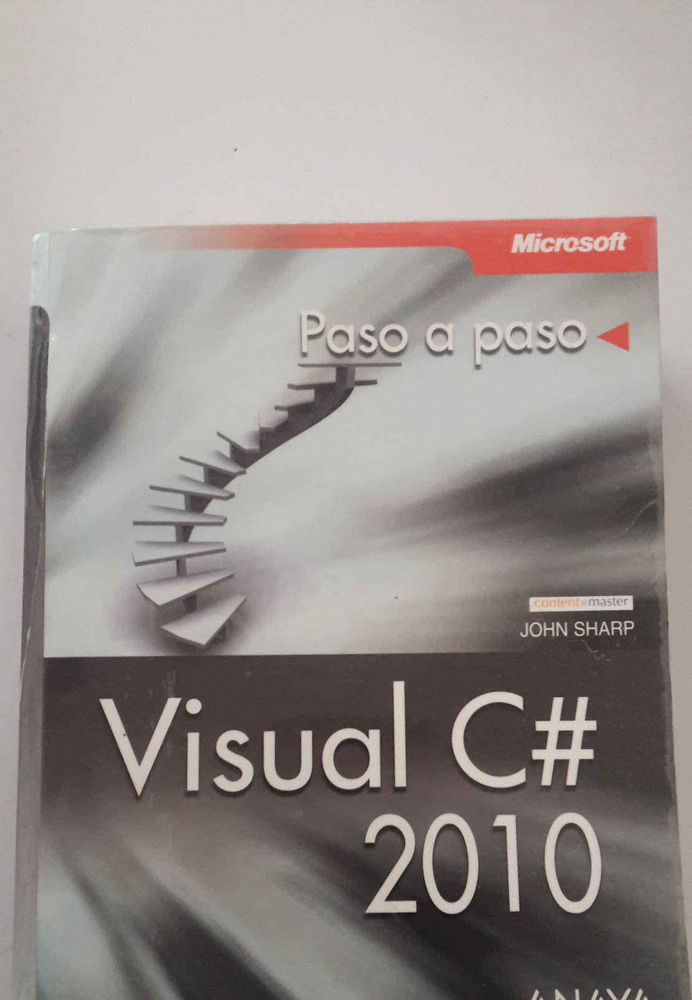

ÍNDICE............................................................................................................................ 7
INTRODUCCIÓN........................................................................................................ 21
UNA VERSIÓN LARGO TIEMPO ESPERADA......................................................... 21
AQUELLOS DIFÍCILES TIEMPOS DE LA PROGRAMACIÓN EN WINDOWS .... 22
SÓLO PARA LOS ELEGIDOS..................................................................................... 22
EL PROYECTO THUNDER .............................................................................................23
UN PRODUCTO REVOLUCIONARIO.............................................................................23
EL PASO A OLE Y ODBC............................................................................... 23
PASO A 32 BITS Y ORIENTACIÓN A OBJETO .................................................................23
ACTIVEX Y ADO ........................................................................................................ 24
PROGRAMACIÓN EN INTERNET .....................................................................................24
LOS PROBLEMAS PARA EL DESARROLLO EN LA RED.......................................25
EL PANORAMA ACTUAL......................................................................................................................................25 LAS SOLUCIONES APORTADAS POR VB.NET ............................................................................. 25
EL PRECIO DE LA RENOVACIÓN........................................................................................................................25
COMENZAMOS.......................................................................................................................................................26 LA EVOLUCIÓN HACIA .NET ................................................................................ 27
LAS RAZONES DEL CAMBIO...............................................................................................................................27
LA DIFÍCIL DECISIÓN DE ABANDONAR ANTERIORES TECNOLOGÍAS.....................................................28
LA PROBLEMÁTICA DE WINDOWS DNA .................................................................................... 28 ASP................................................................................................................................. 28
ADO ............................................................................................................................... 28
VISUAL BASIC ........................................................................................................29
CONFLICTOS CON DLL’S .............................................................................................29
TRAS LOS PASOS DE COM................................................................................................. 29
NET FRAMEWORK, NUEVOS CIMIENTOS PARA LA NUEVA GENERACIÓN DE APLICACIONES..................................................................................................................... 31
ALGO ESTÁ CAMBIANDO .................................................................................................... 32
. NET FRAMEWORK................................................................................................................................34
EL CLR, COMMON LANGUAGE RUNTIME....................................................................................................35
EL CTS, COMMON TYPE SYSTEM...................................................................................................................36
¿Qué es un tipo dentro de .NET Framework? ........................................................................... 36
Los tipos de datos son objetos.................................................................................................... 37
Categorías de tipos .................................................................................................................... 39
La disposición de los datos en la memoria ................................................................................ 39
Embalaje y desembalaje de tipos por valor ............................................................................... 42
METADATA (METADATOS) ........................................................................................................ 44 SOPORTE MULTI-LENGUAJE ..............................................................................................................................44 EL CLS (COMMON LANGUAGE SPECIFICATION) ....................................................................... 45 EJECUCIÓN ADMINISTRADA ..............................................................................................................................45 Código administrado.................................................................................................................. 46 Datos administrados .................................................................................................................. 46 Recolección de memoria no utilizada ........................................................................................ 46 Recolección de memoria en VB6 y versiones anteriores ........................................................... 47 Recolección de memoria en .NET Framework .......................................................................... 47 LA EJECUCIÓN DE CÓDIGO DENTRO DEL CLR............................................................................
47 El IL, Intermediate Language .................................................................................................... 47
Compilación instantánea del IL y ejecución.............................................................................. 48
Compilación bajo demanda ....................................................................................................... 49
Independencia de plataforma..................................................................................................... 50
DOMINIOS DE APLICACIÓN ................................................................................................... 50
SERVIDORES DE ENTORNO ................................................................................................. 51
NAMESPACES ............................................................................................................................. 52
LA JERARQUÍA DE CLASES DE .NET FRAMEWORK ................................................... 55
ENSAMBLADOS........................................................................................................................... 56
La problemática tradicional de los componentes ...................................................................... 57
Ensamblados, una respuesta a los actuales conflictos .............................................................. 57
Tipos de ensamblado según modo de creación.......................................................................... 57
El contenido de un ensamblado ................................................................................................. 58
El manifiesto del ensamblado .................................................................................................... 58
Tipos de ensamblado según contenido....................................................................................... 59
Tipos de ensamblado según ámbito ........................................................................................... 61
Ubicación de ensamblados compartidos ................................................................................... 61
Identificación mediante claves integradas en el propio ensamblado ..................................... 62
Versiones de ensamblados ......................................................................................................... 62
Compatibilidad a nivel de versión ............................................................................................. 63
Ejecución conjunta de ensamblados .......................................................................................... 63
Ficheros de configuración ......................................................................................................... 64
Localización de ensamblados por parte del CLR ...................................................................... 64
Optimización de la carga de ensamblados ................................................................................ 65
INSTALACIÓN DE VISUAL STUDIO .NET ...................................................................... 67
PREPARACIÓN DEL ENTORNO DE TRABAJO ..........................................................67
.NET Framework SDK................................................................................................... 67
Visual Studio .NET..................................................................................................................... 67
REQUISITOS HARDWARE ....................................................................................................... 68
SISTEMA OPERATIVO.................................................................................................................. 68
RECOMENDACIONES PREVIAS ......................................................................................68
INSTALACIÓN DE VISUAL STUDIO .NET ........................................................................ 69
BASES DE DATOS DE EJEMPLO.................................................................................................75
LA PRIMERA APLICACIÓN ............................................................................................... 79
UN HOLA MUNDO DESDE VB.NET................................................................................... 79
INICIAR EL IDE DE VS.NET............................................................................................. 79
CREAR UN NUEVO PROYECTO ........................................................................................ 81
OBJETOS, PROPIEDADES Y MÉTODOS ......................................................................................... 82 FORMULARIOS.......................................................................................................................................................82 EL FORMULARIO COMO UN OBJETO............................................................................................ 83
ACCESO A LAS PROPIEDADES DE UN FORMULARIO .................................................................... 83
CONTROLES................................................................................................................................ 85
LABEL......................................................................................................................................... 86
EJECUTANDO LA APLICACIÓN .................................................................................................... 87
EL CÓDIGO DE LA APLICACIÓN................................................................................................... 88
DISECCIONANDO EL CÓDIGO FUENTE DEL FORMULARIO ........................................................... 90
La clase del formulario.............................................................................................................. 91
El método constructor New( ) .................................................................................................... 91
Configuración del formulario y creación de controles.............................................................. 92
Liberación de recursos del formulario ...................................................................................... 93
ESTRUCTURA Y GRABACIÓN DEL PROYECTO ............................................................................. 93
ESCRITURA DE CÓDIGO.................................................................................................... 95
ESCRIBIR CÓDIGO, EL PAPEL CLÁSICO DEL PROGRAMADOR.................................................. 95
UN PROGRAMA ESCRIBIENDO SU CÓDIGO............................................................................ 95
CREAR EL PROYECTO ................................................................................................................. 96
UN NUEVO MÓDULO DE CÓDIGO ................................................................................................ 96
LA UBICACIÓN FÍSICA DEL CÓDIGO ............................................................................................ 97
COMENTARIOS DE CÓDIGO......................................................................................................... 98
PROCEDIMIENTOS....................................................................................................................... 98
EL PUNTO DE ENTRADA AL PROGRAMA ..................................................................................... 99
LA CLASE MESSAGEBOX ...................................................................................................................................99
CONFIGURAR EL PUNTO DE ENTRADA DEL PROYECTO............................................................... 100
VARIABLES.............................................................................................................................................................102 INPUTBOX( )............................................................................................................................... 102
COMPLETANDO EL PROCEDIMIENTO .......................................................................................... 103
FINALIZAMOS EL PROGRAMA ...........................................................................................................................104
UNA APLICACIÓN CON FUNCIONALIDAD BÁSICA ................................................... 105
INTEGRANDO LO VISTO HASTA EL MOMENTO .............................................................................................105
UN PROGRAMA MÁS OPERATIVO................................................................................................ 105
DISEÑO DEL FORMULARIO.......................................................................................................... 105
CONTROLES Y EVENTOS ...................................................... ...................................................... 108 OTRO MODO DE ESCRIBIR EL CÓDIGO DE UN EVENTO ....................................... ........................ 109
GRABANDO TEXTO EN UN FICHERO................................................................................................. 110
UNA PUNTUALIZACIÓN SOBRE LOS EVENTOS.................................................................................. 112
EL ENTORNO DE DESARROLLO INTEGRADO (IDE), DE VISUAL STUDIO .NET.........113
EL IDE, UN ELEMENTO A VECES MENOSPRECIADO ......................................................................... 113
EL LARGO CAMINO HACIA LA CONVERGENCIA ............................................................................... 114
VISUAL STUDIO .NET, EL PRIMER PASO DE LA TOTAL INTEGRACIÓN............................................. 114
LA PÁGINA DE INICIO....................................................................................................................... 114
PRINCIPALES ELEMENTOS EN NUESTRO ENTORNO DE TRABAJO ..................................................... 116
VENTANA PRINCIPAL DE TRABAJO .................................................................................................. 117
MANEJO DE VENTANAS ADICIONALES DEL IDE .............................................................................. 119
EL EXPLORADOR DE SOLUCIONES................................................................................................... 124
Agregar nuevos elementos a un proyecto.................................................................................... 126
Propiedades del proyecto............................................................................................................ 127
Propiedades de la solución ......................................................................................................... 128
Agregar proyectos a una solución............................................................................................... 128
EL MENÚ CONTEXTUAL ................................................................................................................... 130
EL DISEÑADOR DEL FORMULARIO ................................................................................................... 130
LA VENTANA DE PROPIEDADES ....................................................................................................... 131
EL IDE DE VISUAL STUDIO .NET. HERRAMIENTAS Y EDITORES .................................. 135
EL CUADRO DE HERRAMIENTAS...................................................................................................... 135
Organización en fichas................................................................................................................ 136
Manipulación de fichas ............................................................................................................... 137
Organización de controles .......................................................................................................... 137
Manipulación de controles .......................................................................................................... 139
Agregar controles........................................................................................................................ 140
El cuadro de herramientas como contenedor de código fuente .................................................. 141
LAS BARRAS DE HERRAMIENTAS..................................................................................................... 142
Barras de herramientas personalizadas...................................................................................... 143
Acople de barras de herramientas .............................................................................................. 145
OPCIONES ADICIONALES DE PERSONALIZACIÓN ............................................................................. 145
VENTANA DE RESULTADOS ............................................................................................................. 146
EL EDITOR DE CÓDIGO FUENTE........................................................................................................ 147
Ajuste de fuente y color ............................................................................................................... 148
Números de línea......................................................................................................................... 149
Búsqueda y sustitución de código................................................................................................ 149
Ajuste de línea ............................................................................................................................. 151
Dividir el editor de código .......................................................................................................... 152
Marcadores ................................................................................................................................. 153
Mostrar espacios en blanco ........................................................................................................ 154
Esquematización.......................................................................................................................... 154
Regiones ...................................................................................................................................... 155
Comentarios de código en bloque ............................................................................................... 156
Ir a la definición de un procedimiento ........................................................................................ 156
IntelliSense .................................................................................................................................. 156
Cambiar a mayúsculas y minúsculas .......................................................................................... 158
EL IDE DE VISUAL STUDIO .NET. ELEMENTOS COMPLEMENTARIOS Y AYUDA..... 159
EDITORES DE IMÁGENES.................................................................................................................. 159
LISTA DE TAREAS ............................................................................................................................ 160
Definición de símbolos para tareas............................................................................................. 161
Creación de tareas ...................................................................................................................... 161
Ventana Lista de tareas ............................................................................................................... 162
Eliminación de tareas.................................................................................................................. 163
MOSTRAR LA PANTALLA COMPLETA............................................................................................... 163
LA VISTA DE CLASES....................................................................................................................... 163 EL EXPLORADOR DE OBJETOS ......................................................................................................... 164
MACROS .......................................................................................................................................... 165
El Explorador de macros ............................................................................................................ 166
Ejecución de macros ................................................................................................................... 167
Grabación de macros .................................................................................................................. 167
Manipulación de proyectos de macros........................................................................................ 168
El IDE de macros ........................................................................................................................ 169
Escritura de macros .................................................................................................................... 170
Macro para comentar líneas de código determinadas................................................................ 172
EL SISTEMA DE AYUDA.................................................................................................................... 173
Ayuda dinámica........................................................................................................................... 174
Contenido .................................................................................................................................... 175
Índice ........................................................................................................................................... 176
Buscar.......................................................................................................................................... 177
Ayuda externa.............................................................................................................................. 178
Mantener temas de ayuda disponibles ........................................................................................ 179
Otros modos de acceso a la ayuda .............................................................................................. 180
APLICACIONES DE CONSOLA ................................................................................................... 181
CREACIÓN DE UN PROYECTO DE TIPO APLICACIÓN DE CONSOLA.................................................... 181
LA CLASE CONSOLE......................................................................................................................... 182
ESCRITURA DE INFORMACIÓN ......................................................................................................... 183
ESCRITURA DE MÚLTIPLES VALORES EN LA MISMA LÍNEA.............................................................. 185
LECTURA DE INFORMACIÓN ............................................................................................................ 187
EL LENGUAJE ................................................................................................................................. 189
EL LENGUAJE, PRINCIPIO DEL DESARROLLO ................................................................................... 189
ESTRUCTURA DE UN PROGRAMA VB.NET ...................................................................................... 190
MAIN( ) COMO PROCEDIMIENTO DE ENTRADA AL PROGRAMA........................................................ 191
VARIABLES ...................................................................................................................................... 191
Declaración ................................................................................................................................. 191
Denominación ............................................................................................................................. 192
Avisos del IDE sobre errores en el código .................................................................................. 192
Lugar de la declaración .............................................................................................................. 192
Tipificación.................................................................................................................................. 193
Declaración múltiple en línea ..................................................................................................... 195
Asignación de valor..................................................................................................................... 195
Valor inicial................................................................................................................................. 197
Declaración obligatoria .............................................................................................................. 198
Tipificación obligatoria............................................................................................................... 201
ARRAYS, CONCEPTOS BÁSICOS ....................................................................................................... 203
Declaración ................................................................................................................................. 203
Asignación y obtención de valores .............................................................................................. 204
Modificación de tamaño .............................................................................................................. 205
Recorrer un array........................................................................................................................ 206
CONSTANTES ................................................................................................................................... 206
CONCEPTOS MÍNIMOS SOBRE DEPURACIÓN..................................................................................... 208
OPERADORES DEL LENGUAJE ................................................................................................. 211
ARITMÉTICOS .................................................................................................................................. 211
Potenciación: ^............................................................................................................................ 211
Multiplicación: * ........................................................................................................................ 212
División real: /............................................................................................................................ 212
División entera: \........................................................................................................................ 213
Resto: Mod ................................................................................................................................. 213
Suma: + ...................................................................................................................................... 213
Resta: ....................................................................................................................................... 214
CONCATENACIÓN: &, + .................................................................................................................. 215
OPERADORES ABREVIADOS DE ASIGNACIÓN................................................................................... 215
Potencia: ^= ............................................................................................................................... 215
Multiplicación: *= ..................................................................................................................... 216
División real: /=......................................................................................................................... 216
División entera: \= ..................................................................................................................... 216
Suma: += ................................................................................................................................... 217
Resta: -=..................................................................................................................................... 217
Concatenación: &=.................................................................................................................... 218
COMPARACIÓN ................................................................................................................................ 218
Comparación de cadenas ............................................................................................................ 219
La función Asc( ) ......................................................................................................................... 220
La función Chr( )......................................................................................................................... 221
Comparación de cadenas en base a un patrón. El operador Like .............................................. 221
Comparación de objetos. El operador Is .................................................................................... 224
LÓGICOS Y A NIVEL DE BIT .............................................................................................................. 225
And .............................................................................................................................................. 225
Uso de paréntesis para mejorar la legibilidad de expresiones ................................................... 226
Not ............................................................................................................................................... 227
Or ................................................................................................................................................ 228
Xor ............................................................................................................................................... 229
AndAlso ....................................................................................................................................... 230
OrElse.......................................................................................................................................... 231
PRIORIDAD DE OPERADORES ........................................................................................................... 231
USO DE PARÉNTESIS PARA ALTERAR LA PRIORIDAD DE OPERADORES............................................ 233
RUTINAS DE CÓDIGO................................................................................................................... 235
DIVISIÓN DE UNA LÍNEA DE CÓDIGO................................................................................................ 235
ESCRITURA DE VARIAS SENTENCIAS EN LA MISMA LÍNEA............................................................... 236
PROCEDIMIENTOS............................................................................................................................ 236
Sintaxis de un procedimiento Sub................................................................................................ 237
Llamada a un procedimiento Sub................................................................................................ 238
Sintaxis de un procedimiento Function ....................................................................................... 238
Llamada a un procedimiento Function ....................................................................................... 240
Paso de parámetros a procedimientos ........................................................................................ 241
Protocolo de llamada o firma de un procedimiento.................................................................... 241
Tipo de dato de un parámetro ..................................................................................................... 241
Paso de parámetros por valor y por referencia .......................................................................... 242
Paso por valor (ByVal) ............................................................................................................ 242
Paso por referencia (ByRef) .................................................................................................... 243
Paso de parámetros por posición y por nombre ......................................................................... 244
Parámetros opcionales................................................................................................................ 245
Array de parámetros ................................................................................................................... 246
Sobrecarga de procedimientos .................................................................................................... 247
Lista desplegable “Nombre de método”, en el editor de código ................................................ 251
BIFURCACIÓN Y ÁMBITO DEL CÓDIGO ................................................................................ 253
ESTRUCTURAS DE CONTROL............................................................................................................ 253
Selección...................................................................................................................................... 253
If ...End If ................................................................................................................................. 253
Select Case ...End Select .......................................................................................................... 257
Repetición.................................................................................................................................... 259
While ...End While ................................................................................................................... 259
Do 260 ...Loop................................................................................................................................. For ...Next................................................................................................................................. 262
For Each ...Next........................................................................................................................ 264
ORGANIZACIÓN DEL PROYECTO EN FICHEROS Y MÓDULOS DE CÓDIGO.......................................... 265
Agregar un nuevo módulo (y fichero) de código......................................................................... 266
Crear un nuevo módulo dentro de un fichero existente............................................................... 267
Cambiar el nombre de un fichero de código ............................................................................... 268
Añadir al proyecto un fichero de código existente ...................................................................... 269
Lista desplegable “Nombre de clase”, en el editor de código.................................................... 269
Excluir y eliminar ficheros de código del proyecto..................................................................... 270
REGLAS DE ÁMBITO......................................................................................................................... 271
Ámbito de procedimientos ........................................................................................................... 271
Público ..................................................................................................................................... 271
Privado .................................................................................................................................... 273
Ámbito de variables..................................................................................................................... 274
Ámbito a nivel de procedimiento ............................................................................................ 274
Ámbito a nivel de bloque ........................................................................................................ 275
Ámbito a nivel de módulo ....................................................................................................... 276
Ámbito a nivel de proyecto ..................................................................................................... 277
PERIODO DE VIDA O DURACIÓN DE LAS VARIABLES........................................................................ 278
VARIABLES STATIC ......................................................................................................................... 278
FUNCIONES COMPLEMENTARIAS DEL LENGUAJE........................................................... 281
CONVENCIONES DE NOTACIÓN........................................................................................................ 281
FUNCIONES DE COMPROBACIÓN DE TIPOS DE DATOS ...................................................................... 283
FUNCIONES DEL LENGUAJE ............................................................................................................. 285
Numéricas.................................................................................................................................... 285
Cadena de caracteres .................................................................................................................. 286
Fecha y hora................................................................................................................................ 292
CREAR MÚLTIPLES ENTRADAS AL PROGRAMA MEDIANTE DISTINTOS MAIN( ) ............................... 292
PROGRAMACIÓN ORIENTADA A OBJETO (OOP)................................................................ 295
LAS VENTAJAS DE LA PROGRAMACIÓN ORIENTADA A OBJETO ....................................................... 295
DEL ENFOQUE PROCEDURAL AL ENFOQUE ORIENTADO A OBJETO .................................................. 295
ABORDANDO UN PROBLEMA MEDIANTE PROGRAMACIÓN PROCEDURAL........................................ 295
LOS FUNDAMENTOS DE LA PROGRAMACIÓN ORIENTADA A OBJETO ............................................... 297
OBJETOS .......................................................................................................................................... 298
CLASES ............................................................................................................................................ 298
INSTANCIAS DE UNA CLASE ............................................................................................................. 299
CARACTERÍSTICAS BÁSICAS DE UN SISTEMA ORIENTADO A OBJETO............................................... 300
Abstracción.................................................................................................................................. 300
Encapsulación ............................................................................................................................. 300
Polimorfismo ............................................................................................................................... 301
Herencia ...................................................................................................................................... 301
JERARQUÍAS DE CLASES .................................................................................................................. 302
RELACIONES ENTRE OBJETOS.......................................................................................................... 302
Herencia ...................................................................................................................................... 302
Pertenencia.................................................................................................................................. 303
Utilización ................................................................................................................................... 303
REUTILIZACIÓN ............................................................................................................................... 303
ANÁLISIS Y DISEÑO ORIENTADO A OBJETOS.................................................................................... 303
CREACIÓN DE CLASES...................................................................................................................... 304
ORGANIZACIÓN DE CLASES EN UNO O VARIOS FICHEROS DE CÓDIGO............................................. 305
CÓDIGO DE CLASE Y CÓDIGO CLIENTE ............................................................................................ 306
REGLAS DE ÁMBITO GENERALES PARA CLASES............................................................................... 306
INSTANCIACIÓN DE OBJETOS ........................................................................................................... 306
MIEMBROS DE LA CLASE ................................................................................................................. 307
DEFINIR LA INFORMACIÓN DE LA CLASE ......................................................................................... 307
CREACIÓN DE CAMPOS PARA LA CLASE .......................................................................................... 308
CREACIÓN DE PROPIEDADES PARA LA CLASE.................................................................................. 309
VENTAJAS EN EL USO DE PROPIEDADES .......................................................................................... 310
ENCAPSULACIÓN A TRAVÉS DE PROPIEDADES ................................................................................ 310
PROPIEDADES DE SÓLO LECTURA O SÓLO ESCRITURA..................................................................... 312
PROPIEDADES VIRTUALES ............................................................................................................... 314
NOMBRES DE PROPIEDAD MÁS NATURALES .................................................................................... 315
PROPIEDADES PREDETERMINADAS.................................................................................................. 316
ELIMINACIÓN DE LA PALABRA CLAVE SET PARA ASIGNAR OBJETOS .............................................. 317
MÉTODOS Y ESPACIOS DE NOMBRE ...................................................................................... 319
CREACIÓN DE MÉTODOS PARA LA CLASE ........................................................................................ 319
¿CUÁNDO CREAR UNA PROPIEDAD Y CUÁNDO UN MÉTODO? .......................................................... 323
LA ESTRUCTURA WITH...END WITH................................................................................................ 325
RESULTADOS DISTINTOS EN OBJETOS DE LA MISMA CLASE ............................................................ 325
USO DE ME Y MYCLASS PARA LLAMAR A LOS MIEMBROS DE LA PROPIA CLASE ........................... 326
SOBRECARGA DE MÉTODOS O POLIMORFISMO, EN UNA MISMA CLASE........................................... 327
ENLACE (BINDING) DE VARIABLES A REFERENCIAS DE OBJETOS .................................................... 329
Enlace temprano.......................................................................................................................... 329
Enlace tardío ............................................................................................................................... 330
ESPACIOS DE NOMBRES (NAMESPACES) .......................................................................................... 333
ACCESO A ESPACIOS DE NOMBRE DE OTROS ENSAMBLADOS .......................................................... 337
CONSTRUCTORES Y HERENCIA............................................................................................... 341
MÉTODOS CONSTRUCTORES............................................................................................................ 341
HERENCIA........................................................................................................................................ 343 TODAS LAS CLASES NECESITAN UNA CLASE BASE .......................................................................... 344
REGLAS DE ÁMBITO ESPECÍFICAS PARA CLASES ............................................................................. 345
Protected ..................................................................................................................................... 346
Friend .......................................................................................................................................... 347
Protected Friend.......................................................................................................................... 348
HERENCIA Y SOBRECARGA DE MÉTODOS ........................................................................................ 348
MYBASE, ACCESO A LOS MÉTODOS DE LA CLASE BASE.................................................................. 350
HERENCIA Y SOBRE-ESCRITURA DE MÉTODOS ................................................................................ 350
DIFERENCIAS ENTRE SOBRECARGA Y SOBRE-ESCRITURA EN BASE AL TIPO DE ENLACE................. 353
OCULTAMIENTO DE MIEMBROS DE UNA CLASE............................................................................... 355
COMPORTAMIENTO DE LAS PALABRAS CLAVE ME, MYCLASS Y MYBASE ANTE LA SOBREESCRITURA DE MÉTODOS................................................................................................................. 359
HERENCIA Y MÉTODOS CONSTRUCTORES........................................................................................ 360
CLASES SELLADAS O NO HEREDABLES ............................................................................................ 362
CLASES ABSTRACTAS O NO INSTANCIABLES ................................................................................... 362
ELEMENTOS COMPARTIDOS E INTERFACES ...................................................................... 365
COMPROBACIÓN DEL TIPO DE UN OBJETO Y MOLDEADO (CASTING) ............................................... 365
MIEMBROS COMPARTIDOS (SHARED) DE UNA CLASE...................................................................... 368
DEFINIR UNA CLASE COMO PUNTO DE ENTRADA DE LA APLICACIÓN.............................................. 370
DESTRUCCIÓN DE OBJETOS Y RECOLECCIÓN DE BASURA................................................................ 371
INTERFACES..................................................................................................................................... 373
ESTRUCTURAS ................................................................................................................................. 378
Creación y manipulación de estructuras..................................................................................... 378
Estructuras o clases, ¿cuál debemos utilizar? ............................................................................ 380 La estructura del sistema DateTime............................................................................................ 382
ENUMERACIONES ............................................................................................................................ 383
APLICANDO UN ENFOQUE ENTERAMENTE OOP EN EL CÓDIGO ................................. 387
LOS TIPOS DE DATOS TAMBIÉN SON OBJETOS.................................................................................. 387
MANIPULACIÓN DE CADENAS CON LA CLASE STRING..................................................................... 388
OPTIMIZANDO LA MANIPULACIÓN DE CADENAS CON LA CLASE STRINGBUILDER.......................... 393
CONVERSIÓN DE TIPOS CON LA CLASE CONVERT............................................................................ 394
LA ESTRUCTURA CHAR ................................................................................................................... 395
EL TIPO DATE (FECHA) .................................................................................................................... 396
OPERACIONES ARITMÉTICAS, LA CLASE MATH............................................................................... 396
FORMATEO DE VALORES ................................................................................................................. 397
Fechas ......................................................................................................................................... 398
Modificando el formato estándar para las fechas....................................................................... 400
Números ...................................................................................................................................... 402
Formateando directamente en la consola ................................................................................... 403
Usando la clase String para formatear ....................................................................................... 403
Usando una clase para crear formatos personalizados.............................................................. 403
DELEGACIÓN DE CÓDIGO Y EVENTOS..................................................................................407
DELEGADOS (DELEGATES) .............................................................................................................. 407
DECLARACIÓN DE DELEGADOS ....................................................................................................... 407
CREACIÓN DE DELEGADOS .............................................................................................................. 408
EXTENDER LAS FUNCIONALIDADES DE UNA CLASE A TRAVÉS DE DELEGADOS .............................. 411
EVENTOS. ¿QUÉ ES UN EVENTO? ..................................................................................................... 414
EVENTOS EN .NET ........................................................................................................................... 414
PROGRAMACIÓN ESTRICTAMENTE PROCEDURAL............................................................................ 414
UN ESCENARIO DE TRABAJO SIN EVENTOS ...................................................................................... 414
PROGRAMACIÓN BASADA EN EVENTOS........................................................................................... 415
ESQUEMA BÁSICO DE UN SISTEMA ORIENTADO A EVENTOS............................................................ 415
EL EMISOR DE EVENTOS .................................................................................................................. 416
EL RECEPTOR DE EVENTOS .............................................................................................................. 417
CONEXIÓN DE UN EMISOR DE EVENTOS CON UN MANIPULADOR DE EVENTOS................................ 417
ENLACE ESTÁTICO DE EVENTOS ...................................................................................................... 418
ENLACE DINÁMICO DE EVENTOS ..................................................................................................... 420
UN EVENTO ES UN DELEGADO ......................................................................................................... 421
LA CLASE EVENTARGS, O CÓMO OBTENER INFORMACIÓN DEL OBJETO EMISOR DEL EVENTO....... 422
ARRAYS ............................................................................................................................................ 427
ASPECTOS BÁSICOS ......................................................................................................................... 427
LA CLASE ARRAY ............................................................................................................................ 428
ADECUACIÓN DE LOS ARRAYS EN VB CON LOS ARRAYS DE LA PLATAFORMA .NET ..................... 428
El primer índice de un array debe ser siempre cero ................................................................... 429
No es posible crear arrays con rangos de índices ...................................................................... 429
Todos los arrays son dinámicos .................................................................................................. 429 DECLARACIÓN................................................................................................................................. 430
ASIGNACIÓN Y OBTENCIÓN DE VALORES ........................................................................................ 431
RECORRER EL CONTENIDO .............................................................................................................. 431
MODIFICACIÓN DE TAMAÑO............................................................................................................ 433
USO DEL MÉTODO CREATEINSTANCE( ) PARA ESTABLECER EL NÚMERO DE ELEMENTOS EN UN ARRAY ............................................................................................................................................. 434
PASO DE ARRAYS COMO PARÁMETROS, Y DEVOLUCIÓN DESDE FUNCIONES................................... 435
CLONACIÓN ..................................................................................................................................... 435
COPIA............................................................................................................................................... 436
INICIALIZACIÓN DE VALORES .......................................................................................................... 437
ORDENACIÓN................................................................................................................................... 439
BÚSQUEDA....................................................................................................................................... 439
ARRAYS MULTIDIMENSIONALES ..................................................................................................... 440
COLECCIONES ............................................................................................................................... 443
COLECCIONES, LA ESPECIALIZACIÓN DE LOS ARRAYS.................................................................... 443
EL ESPACIO DE NOMBRES SYSTEM.COLLECTIONS .......................................................................... 444
LA CLAVE SE HALLA EN LOS INTERFACES ....................................................................................... 444
LA CLASE ARRAYLIST..................................................................................................................... 445
Instanciación de objetos ArrayList.............................................................................................. 445
Agregar valores a un ArrayList................................................................................................... 445
Recorrer y obtener valores de un ArrayList................................................................................ 446
Capacidad y valores en una colección ArrayList........................................................................ 447
Obtención de subarrays a partir de un objeto ArrayList ............................................................ 449
Búsquedas en colecciones ArrayList ........................................................................................... 451
Borrado de elementos en una colección ArrayList ..................................................................... 451
Ordenar elementos en un objeto ArrayList ................................................................................. 453
LA CLASE HASHTABLE .................................................................................................................... 453
Manejo básico de colecciones Hashtable....................................................................................453
Operaciones varias con colecciones Hashtable.......................................................................... 455
Traspaso de elementos desde una colección Hashtable a un array básico ................................ 457
LA CLASE SORTEDLIST.................................................................................................................... 458
LA CLASE QUEUE............................................................................................................................. 459
Manipulación de valores en una colección Queue...................................................................... 459
LA CLASE STACK ............................................................................................................................. 462
COLECCIONES PERSONALIZADAS.......................................................................................... 465
CUANDO EL TIPO DE ARRAY QUE NECESITAMOS NO EXISTE ........................................................... 465
UTILIZANDO LA HERENCIA PARA CREAR UNA NUEVA COLECCIÓN ................................................. 465
IMPLEMENTANDO UN INTERFAZ PARA CREAR UNA NUEVA COLECCIÓN ......................................... 467
MANIPULACIÓN DE ERRORES.................................................................................................. 473
ERRORES, ESE MAL COMÚN............................................................................................................. 473
Errores de escritura .................................................................................................................... 473
Errores de ejecución ................................................................................................................... 47
4 Errores lógicos ............................................................................................................................ 474
ERRORES Y EXCEPCIONES................................................................................................................ 474
MANIPULADORES DE EXCEPCIONES ................................................................................................ 475
TIPOS DE TRATAMIENTO DE ERROR EN VB.NET ............................................................................. 475
MANIPULACIÓN ESTRUCTURADA DE ERRORES ............................................................................... 475
La estructura Try...End Try......................................................................................................... 475
La clase Exception....................................................................................................................... 478
Captura de excepciones de diferente tipo en el mismo controlador de errores.......................... 479
Establecer una condición para un manipulador de excepciones ................................................ 480
La influencia del orden de los manipuladores de excepciones ................................................... 482
Forzar la salida de un controlador de errores mediante Exit Try .............................................. 483
Creación de excepciones personalizadas .................................................................................... 484
MANIPULACIÓN NO ESTRUCTURADA DE ERRORES.......................................................................... 486
El objeto Err................................................................................................................................ 486
On Error ...................................................................................................................................... 486
On Error Goto Etiqueta .............................................................................................................. 486
On Error Resume Next ................................................................................................................ 487
Creación de errores con el objeto Err ........................................................................................ 488
On Error Goto 0 .......................................................................................................................... 488
OPERACIONES DE ENTRADA Y SALIDA (I/O). GESTIÓN DEL SISTEMA DE ARCHIVOS ............................................................................................................................................................. 491
LA REMODELACIÓN DEL VIEJO ESQUEMA DE ENTRADA Y SALIDA .................................................. 491
SYSTEM.IO, EL PUNTO DE PARTIDA................................................................................................. 491
OBJETOS STREAM............................................................................................................................ 492
LAS CLASES TEXTREADER Y TEXTWRITER .................................................................................... 492
LA CLASE STREAMWRITER ............................................................................................................. 492
LA CLASE STREAMREADER............................................................................................................. 494
LAS CLASES STRINGWRITER Y STRINGREADER ............................................................................. 496
LA CLASE STREAM (FLUJO DE DATOS) ............................................................................................ 496
LA CLASE FILESTREAM ................................................................................................................... 496
MANEJO DE DATOS BINARIOS.......................................................................................................... 498
MANIPULACIÓN DE ARCHIVOS MEDIANTE FILE Y FILEINFO ........................................................... 498
MANIPULACIÓN DE ARCHIVOS MEDIANTE DIRECTORY Y DIRECTORYINFO ................................... 500
LA CLASE PATH ............................................................................................................................... 502
MONITORIZACIÓN DEL SISTEMA DE ARCHIVOS CON FILESYSTEMWATCHER ................................. 503
Ajuste preciso de filtros para el monitor de archivos ................................................................. 505
Establecer el procedimiento de evento con AddHandler ............................................................ 505
Consideraciones sobre la ruta de archivos ................................................................................. 506
DETECCIÓN CON ESPERA, DE EVENTOS PRODUCIDOS SOBRE ARCHIVOS......................................... 507
MANIPULACIÓN DE ARCHIVOS MEDIANTE FUNCIONES ESPECÍFICAS DE VISUAL BASIC ................. 507
FORMULARIOS WINDOWS ......................................................................................................... 509
INTERFACES DE VENTANA. FORMULARIOS Y CONTROLES .............................................................. 509
SYSTEM.WINDOWS.FORMS ............................................................................................................. 510
LA CLASE FORM .............................................................................................................................. 510
CREACIÓN DE UN FORMULARIO BÁSICO.......................................................................................... 510
EL CÓDIGO DEL FORMULARIO ......................................................................................................... 512
CAMBIANDO EL NOMBRE DEL FORMULARIO ................................................................................... 51
3 CREACIÓN DE FORMULARIOS DESDE CÓDIGO ................................................................................. 514
INICIAR EL FORMULARIO DESDE MAIN( ) ........................................................................................ 515
TRABAJO CON CONTROLES.............................................................................................................. 517
EL CUADRO DE HERRAMIENTAS...................................................................................................... 517
INSERTAR UN CONTROL EN EL FORMULARIO................................................................................... 518
AJUSTE DE LA CUADRÍCULA DE DISEÑO DEL FORMULARIO............................................................. 519
ORGANIZACIÓN-FORMATO MÚLTIPLE DE CONTROLES.................................................................... 520
ANCLAJE DE CONTROLES................................................................................................................. 522
ACOPLE DE CONTROLES .................................................................................................................. 523
CONTROLES WINDOWS .............................................................................................................. 525
CONTROLES MÁS HABITUALES........................................................................................................ 525
BUTTON ........................................................................................................................................... 526
CODIFICACIÓN DE LOS EVENTOS DE CONTROLES............................................................................ 527
CODIFICANDO OTROS EVENTOS DE UN CONTROL............................................................................ 528
......................................................................................................................................................... 530
ESCRITURA DEL MANIPULADOR DE EVENTO SIN USAR EL NOMBRE PROPORCIONADO POR EL EDITOR RESPONDIENDO A LOS EVENTOS DE UN FORMULARIO .................................................................... 530
LABEL.............................................................................................................................................. 531 FOCO DE ENTRADA .......................................................................................................................... 532
TEXTBOX......................................................................................................................................... 532 ORDEN DE TABULACIÓN DE CONTROLES......................................................................................... 535
SELECCIÓN DE TEXTO EN UN TEXTBOX .......................................................................................... 535
CHECKBOX...................................................................................................................................... 538 RADIOBUTTON Y GROUPBOX ......................................................................................................... 540
LISTBOX .......................................................................................................................................... 542 COMBOBOX ..................................................................................................................................... 547
CODIFICACIÓN AVANZADA DE CONTROLES Y HERENCIA VISUAL ........................... 549
COMPARTIENDO CÓDIGO ENTRE CONTROLES.................................................................................. 549
CREACIÓN DE CONTROLES DESDE CÓDIGO...................................................................................... 553
Código para el interfaz de usuario.............................................................................................. 553
Código para eventos del formulario, conectando con Handles .................................................. 555
Código para eventos de controles, conectando con Handles...................................................... 555
Código para eventos de controles, conectando con AddHandler ............................................... 556
Código para eventos de controles, asociando y separando dinámicamente con AddHandler y RemoveHandler ........................................................................................................................... 557
RECORRIENDO LOS CONTROLES DE UN FORMULARIO ..................................................................... 559
TEMPORIZADORES ........................................................................................................................... 560
CREAR UNA CLASE DERIVADA DE UN CONTROL.............................................................................. 563
HERENCIA VISUAL ........................................................................................................................... 565
El formulario base....................................................................................................................... 566
Agregar un proyecto con un formulario derivado ...................................................................... 567
Crear un formulario heredado desde un proyecto independiente............................................... 570
MENÚS .............................................................................................................................................. 575
CONTROLES DE TIPO MENÚ ............................................................................................................. 575
Menú Principal. MainMenu ........................................................................................................ 575
Menú Contextual. ContextMenu.................................................................................................. 580
Creación de menús desde código ................................................................................................ 582
PROGRAMACIÓN CON HEBRAS ............................................................................................... 585
MANIPULACIÓN DE HEBRAS DE EJECUCIÓN .................................................................................... 585
LA CLASE THREAD .......................................................................................................................... 586
EJECUTAR UN PROCESO EN UNA HEBRA .......................................................................................... 586
CONTROL DE PROCESOS INDEFINIDOS............................................................................................. 588
EJECUCIÓN MULTIHEBRA ................................................................................................................ 590
EJECUCIÓN MULTIHEBRA DE MÚLTIPLES PROCESOS ....................................................................... 591
DETECTANDO EL ESTADO DE FINALIZACIÓN................................................................................... 593
EJECUCIÓN PARALELA DE PROCESOS A DISTINTOS RITMOS ............................................................ 594
SINCRONIZACIÓN DE HEBRAS.......................................................................................................... 596
CREAR UN PROCESO DE MONITORIZACIÓN...................................................................................... 597
INICIOS DE APLICACIÓN CON DOS FORMULARIOS, EMPLEANDO HEBRAS........................................ 599
FORMULARIOS DE INTERFAZ MÚLTIPLE (MDI) ................................................................ 601
APLICACIONES DE ESTILO SDI ........................................................................................................ 601
APLICACIONES DE ESTILO MDI ....................................................................................................... 601
CREACIÓN DE MENÚS DE TIPO VENTANA, EN FORMULARIOS MDI ................................................. 604
BLOQUEO DE OPCIONES DE MENÚ EN FORMULARIOS MDI ............................................................. 606
RECORRER LOS FORMULARIOS HIJOS DE UN MDI ........................................................................... 607
COMPORTAMIENTO NO MODAL (MODELESS) DE FORMULARIOS ................................................... 608
COMPORTAMIENTO MODAL DE FORMULARIOS............................................................................... 608
CONTROLES DE CUADROS DE DIÁLOGO DEL SISTEMA..................................................................... 611
ColorDialog ................................................................................................................................ 611
FontDialog .................................................................................................................................. 612
SaveFileDialog............................................................................................................................ 614
OpenFileDialog........................................................................................................................... 615
FORMULARIOS DEPENDIENTES Y CONTROLES AVANZADOS ...................................... 617
FORMULARIOS DEPENDIENTES Y FIJOS EN PRIMER PLANO .............................................................. 617
VALIDACIÓN DE CONTROLES........................................................................................................... 626
CONTROLES AVANZADOS ................................................................................................................ 627
IMAGELIST....................................................................................................................................... 628
TOOLBAR......................................................................................................................................... 629
STATUSBAR..................................................................................................................................... 631 DATETIMEPICKER ........................................................................................................................... 633
NUMERICUPDOWN.......................................................................................................................... 634
DOMAINUPDOWN............................................................................................................................ 635
MONTHCALENDAR .......................................................................................................................... 635 LINKLABEL...................................................................................................................................... 636
CREACIÓN Y MANIPULACIÓN DE ELEMENTOS EN EJECUCIÓN ......................................................... 637
NOTIFYICON .................................................................................................................................... 638
GDI+. ACCESO AL SUBSISTEMA GRÁFICO DE WINDOWS ............................................... 641
SYSTEM.DRAWING .......................................................................................................................... 642
DIBUJO CON LAS CLASES GRAPHICS Y PEN ..................................................................................... 642
LA CLASE BRUSH............................................................................................................................. 646
DIBUJO DE TEXTO EN EL FORMULARIO............................................................................................ 649
PERSONALIZACIÓN DE LA IMAGEN DE FONDO DEL FORMULARIO ................................................... 650
Manipulación de los eventos de pintado en la clase Form ......................................................... 650
Empleo del control PictureBox ................................................................................................... 651
MANIPULANDO EL GRADO DE OPACIDAD DEL FORMULARIO .......................................................... 652
MODIFICACIÓN DE LA FORMA DEL FORMULARIO............................................................................ 655
INTEGRANDO ELEMENTOS. UN VISUALIZADOR DE GRÁFICOS......................................................... 656
ACCESO A DATOS CON ADO .NET............................................................................................ 663
COMPARATIVA DE ADO /ADO .NET ............................................................................................. 664
BENEFICIOS DE ADO .NET ............................................................................................................. 666
Interoperabilidad......................................................................................................................... 666
Mantenimiento............................................................................................................................. 666
Programación.............................................................................................................................. 666
Rendimiento................................................................................................................................. 667
Escalabilidad............................................................................................................................... 667
ARQUITECTURA DE DATOS DESCONECTADOS ................................................................................. 667
DataSet ........................................................................................................................................ 669
ADO .NET y XML........................................................................................................................ 669
UNA VISIÓN GENERAL DE ADO .NET ............................................................................................. 670
ESPACIOS DE NOMBRES Y CLASES EN ADO .NET ........................................................................... 671
LAS CLASES CONNECTION............................................................................................................... 673
LAS CLASES COMMAND................................................................................................................... 676
LAS CLASES DATAREADER ............................................................................................................. 680
CONJUNTOS DE DATOS Y ENLACE (DATA BINDING) ........................................................ 683
LA CLASE DATASET ........................................................................................................................ 683
LAS CLASES DATAADAPTER ........................................................................................................... 686
NAVEGACIÓN Y EDICIÓN DE REGISTROS EN MODO DESCONECTADO .............................................. 689
DATA BINDING. ENLACE DE DATOS A CONTROLES......................................................................... 694
Tipos de Data Binding................................................................................................................. 694
Elementos integrantes en un proceso de Data Binding............................................................... 694
EMPLEO DE DATA BINDING SIMPLE PARA NAVEGAR Y EDITAR DATOS .......................................... 694
EL CONTROL DATAGRID, RELACIONES Y VISTAS ............................................................ 701
DATAGRID....................................................................................................................................... 701
CREACIÓN DE UN DATAGRID A TRAVÉS DE LOS ASISTENTES DEL IDE ........................................... 703
CONFIGURAR LAS PROPIEDADES DEL DATAGRID ........................................................................... 708
CONFIGURAR POR CÓDIGO LAS PROPIEDADES DEL DATAGRID....................................................... 708
SELECCIÓN DE TABLA EN EL DATAGRID......................................................................................... 710
RELACIONES ENTRE TABLAS MEDIANTE OBJETOS DATARELATION ............................................... 711
Obtener tablas relacionadas mediante código............................................................................ 711
Visualizar datos relacionados en modo maestro-detalle en un DataGrid .................................. 713
Mostrar una relación maestro-detalle en dos DataGrid............................................................. 714
RELACIÓN MAESTRO-DETALLE EN MÚLTIPLES DATAGRID............................................................. 715
VISTAS Y ORDENACIÓN DE DATOS CON LA CLASE DATAVIEW ....................................................... 716
VISTAS POR CÓDIGO Y DEFAULTVIEW............................................................................................ 717
FILTROS CON OBJETOS DATAVIEW ................................................................................................. 718
BÚSQUEDAS CON DATAVIEW.......................................................................................................... 720
ORDENACIÓN DE FILAS MEDIANTE DATAVIEW .............................................................................. 721
OBTENER EL ESQUEMA DE UN DATASET......................................................................................... 723


 2
2 3
3 5
5 7
7 8
8 9
9 10
10 11
11 12
12 13
13 14
14 15
15 16
16 17
17 20
20 21
21 22
22